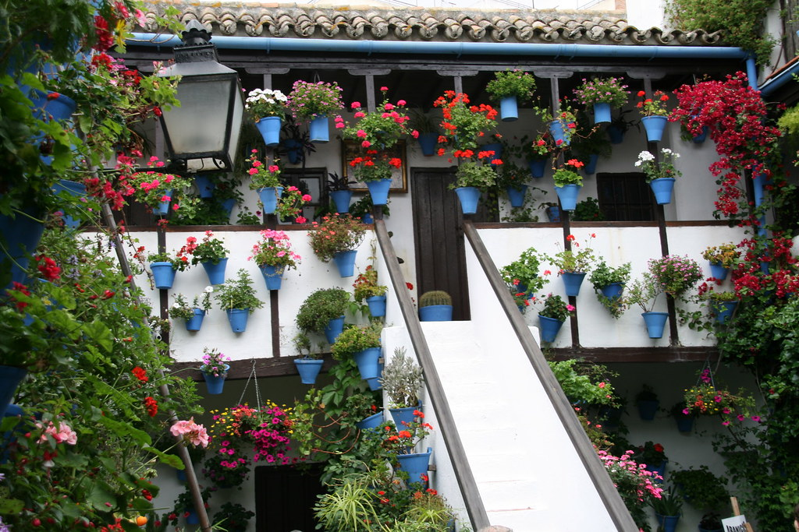
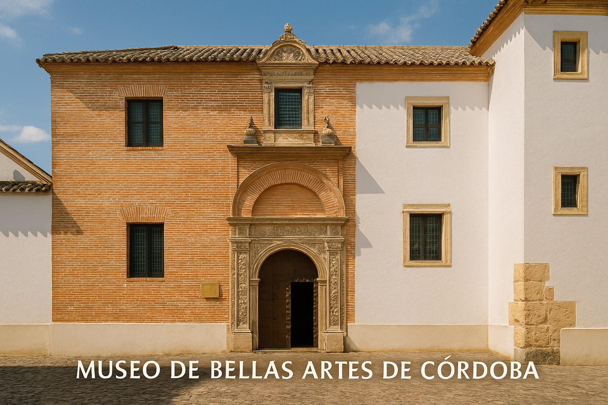
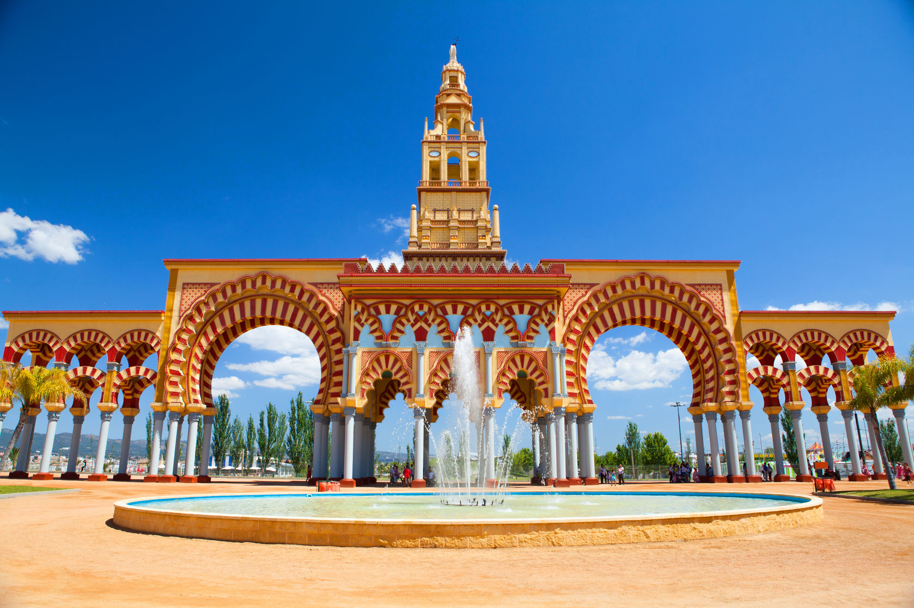
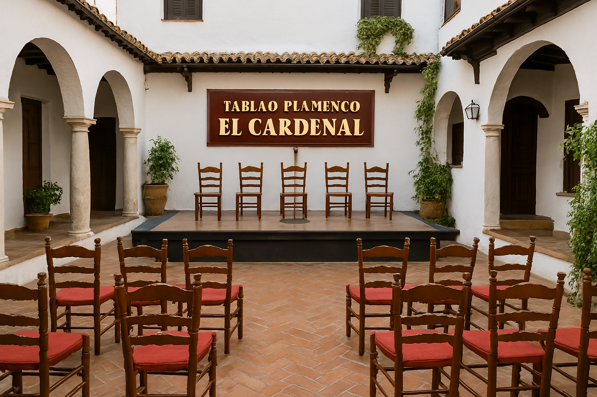
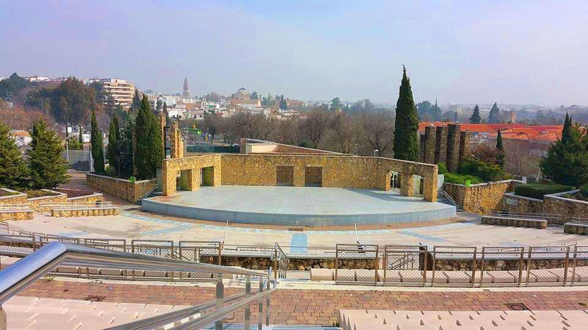
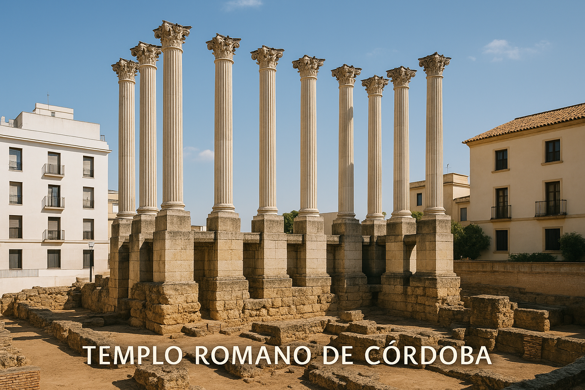
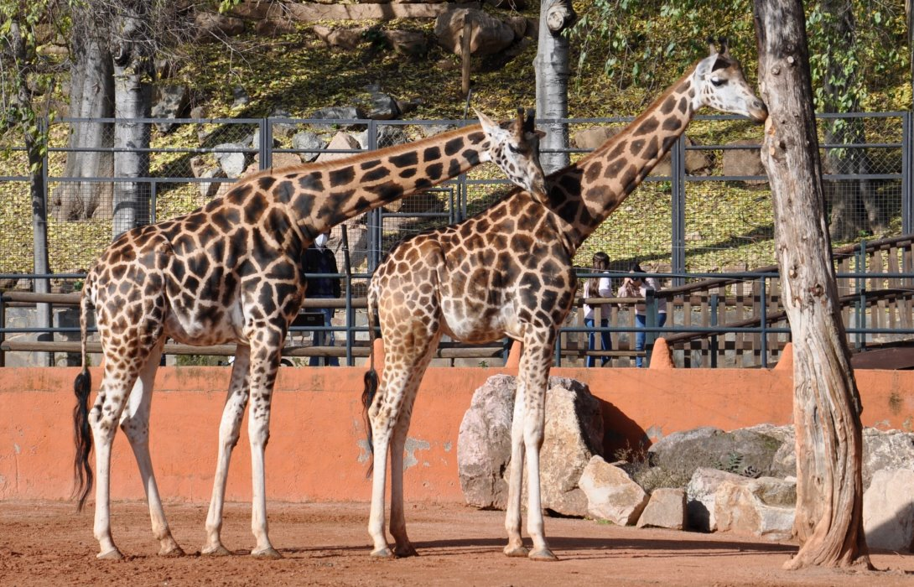

Culture et Découverte

La Feria de Cordoue
La Feria de Córdoba est une fête populaire organisée fin mai en l’honneur de la Vierge de la Santé. Dans le parc El Arenal, on danse la sevillana, on assiste à des corridas, on mange des tapas et on profite des casetas et manèges jusqu’à tard dans la nuit.
Horaires: Dernière semaine de Mai: 24/24
Tarifs: Accès libre

Les Patios de Cordoue
Tradition inscrite au patrimoine culturel immatériel de l'UNESCO, les patios fleuris sont l'âme de Cordoue. En mai, le festival des patios permet de découvrir ces joyaux d'architecture domestique.
Horaires: Festival en mai, certains patios visitables toute l'année
Tarifs: Variable selon les patios

Museo de Bellas Artes de Córdoba
Le Museo de Bellas Artes de Córdoba est un musée consacré à la peinture et à la sculpture, mettant en valeur des œuvres d'artistes espagnols du Moyen Âge à nos jours. Installé dans l'ancien hôpital de la Caridad, il expose des collections riches en peintures baroques et en sculptures andalouses.
Horaires: Mar-Sam : 9h-21h, Dim et jours fériés : 9h-15h (Fermé le lundi)
Tarifs: Gratuit pour les européens, 1.5€ sinon

La portada de la Feria
La portada de la Feria de Córdoba est une structure monumentale qui marque l’entrée du site de la foire d’El Arenal. Elle est l’un des symboles les plus emblématiques de cette fête, qui se tient chaque année fin mai en l’honneur de Notre-Dame de la Santé.

Tablao Flamenco El Cardenal
Situé dans le centre historique de Cordoue, le Tablao Flamenco El Cardenal est un lieu emblématique avec plus de 30 ans d'histoire, offrant des spectacles de flamenco authentiques mettant en vedette des artistes primés.
Horaires: Entre 20h et 21h30
Tarifs: Adultes : 25€,Enfants : 12€

Teatro de la Axerqia
Le Teatro de la Axerquía est un amphithéâtre en plein air situé à Córdoba, en Espagne. Inauguré en 1975, il a été conçu par l'architecte José Rebollo et est intégré dans le parc Cruz Conde. Avec une capacité d'accueil de plus de 3 500 spectateurs, il accueille une variété de spectacles, notamment des concerts, des pièces de théâtre et des festivals.
Horaires: Dépends des représentations
Tarifs: Varie selon les évènements

Templo Romano de Córdoba
Situé à proximité de l'actuel hôtel de ville, le Templo Romano de Córdoba est le seul temple romain de la ville dont l'existence a été confirmée par des preuves archéologiques. Dédié au culte impérial, il impressionne par ses grandes dimensions et faisait partie du Forum Provincial, aux côtés d'un cirque. Construit en marbre, il présentait à l'origine six colonnes corinthiennes en façade et était élevé sur un podium accessible par un escalier.

Centro de Conservación Zoo de Córdoba
Le Centro de Conservación Zoo de Córdoba est un parc zoologique dédié à la conservation et à l'éducation environnementale, situé à Córdoba, en Espagne. Il abrite une variété d'espèces animales et propose des programmes éducatifs pour sensibiliser le public à la biodiversité et à la protection de la faune.
Horaires: 9h30 et 19h00 (Fermé en août)
Tarifs: Gratuit pour les européens, 1.5€ sinon